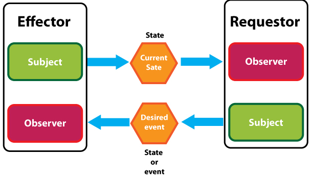

Avoid RPC-like Interactions
The Remote Procedure Call (RPC) interaction model seems very natural to use when designing a distributed system. After all, it closely mirrors the traditional procedure call mechanism one uses when developing non-distributed systems. In fact, an RPC-like request-response interaction model can be trivially implemented on top of Qeo's publish-subscribe framework. We advise you, however, not to go down this route when designing your data model.
A thorough discussion of the shortcomings of the RPC model is out of scope for this document, but for the sake of argument we refer here to the well-known Fallacies of Distributed Computing. The RPC model embodies at least three of these eight fallacies:
- The network is reliable.
- Latency is zero.
- Topology doesn't change.
The Observer and Directed State patterns described below offer an alternative modelling strategy that fits better onto Qeo's publish-subscribe nature than RPCs do.
Basic Patterns
Observer Pattern
It is better to model systems in Qeo as a set of reactive components, where each component publishes its own state, and components observe the global state (the part that is of interest to them) and react to changes in the global state by evolving their local state (this may involve computation, or altering the physical state of an entity "owned" by this component - e.g. opening a valve in an industrial control system), and then publishing their own local state back in the Qeo cloud. This is called the Observer Pattern: components do not directly "push" other components to do something, rather they observe other components and react on their observations by altering their own state. The component publishing state is called the Subject, the subscribing components are called Observers.
Observer Pattern
Directed State Pattern
How can this approach now avoid the RPC pattern? We will still be confronted with situations where one component (A) not only wants to observe some other component's (B) state, but also wants to drive this state forward. The key insight here is that A's desire to drive B's state forward can also be considered as a part of A's state. Hence, instead of directly sending a message to B stating "open the valve", A publishes the state "I desire the valve controlled by B to be open", while B subscribes to this topic (and hence observes A's desired state). B can now, based on the desires it observes in the Qeo cloud, decide whether or not to open the valve. This pattern is called the Directed State Pattern. In this pattern, component A plays the role of Requester, while component B plays the role of Effector. The Effector is the Subject of the Current State, and the Observer of the Desired State. The Requester is the Subject of the Desired State and the Observer of the Current State.

Directed State Pattern
On the surface, the Directed State Pattern is just a roundabout way for doing an RPC, but there are definitely differences between the two approaches:
- Instead of one bidirectional exchange, there are two unidirectional communications in this pattern. This means that it is less easy to propagate back an error code when a requested change is not possible. Rather, the Requester must observe the Effector, and conclude that the Current State does not evolve according to its wishes.
- There is no hard coupling between the Requester and the Effector: it is quite possible to formulate Desired State in such a way that it is not directed towards any specific component, and as such it may be possible that some other component C, which can also observe the Desired State, decides to drive its own state forward as a result of the publication done by A. In this way, fault tolerance can be built into the system (other components pick up the work if B is non-responsive), or new behaviors may be added to the system without breaking old components (C is developed later than A and B and implements an additional behavior the other two don't know about).
- Because the Requester's wishes are expressed in a data-oriented way (essentially, the Requester is saying "I would like your state to evolve towards this end goal"), the purpose-specific messages of the RPC pattern are avoided. There is one generic way to express any action the Requester wishes the Effector to undertake.
Practical Patterns
The "I am X and I have Y" pattern
In many cases, a publishing component needs to provide two kinds of information to the outside world:
- its identity: a unique way to identify exactly this publisher, and its particular properties
- its knowledge: the state of the real-world objects managed by this publisher
For example, a data model for wifi access points will provide information on
- the access point itself (the identity): supported wifi technologies, SSID, MAC address, etc.
- the wireless clients associated with the access point (the knowledge): which devices are associated, what are their MAC addresses, link statistics, etc.
The most natural way to present this information on Qeo is to break it down into 2 separate topics:
- the Identity topic (a state topic) is used to advertise the presence of a publishing component, and to describe its properties. Typically, each publishing component publishes one instance on this topic.
- the Knowledge topic (a state topic) is used to advertise the publishing component's knowledge about the objects it manages. Typically, each object managed by the publishing component gets its own instance on this topic. The instances on this topic have a member field that references back to the key of the Identity topic, so that it is clear to which publishing component a given object on the Knowledge topic belongs.
This pattern follows directly from a Third Normal Form decomposition of the data model.
The "Tell me what you're interested in" pattern
You have some information to share, but
- it's expensive (in terms of energy, processing power, ...) to gather this information. You only want to gather and publish the information when you're certain someone is interested.
- you can supply information at different rates (e.g. a component that publishes network interface statistics), but it is unknown upfront what publishing rate your subscribers are actually interested in.
This problem can be solved with a variation of the Directed State pattern. In this context, the Current State topic is called the Information topic, and the Desired State topic is called the Interest topic. Information consumers express their interest in a given kind of information, at a given publishing rate, on the Interest topic. This is a state topic. The convention is that, as long as a consumer is interested in the information, it maintains an instance on this topic. When the consumer removes the instance from the topic, this signals that it is no longer interested in the information. The information provider subscribes to the Interest topic, and learns about the interests of the existing consumers. It can then decide what information to publish, and at what rate. The information itself is published on the Information topic. The Information topic can be either a state or an event topic, depending on the particular application.